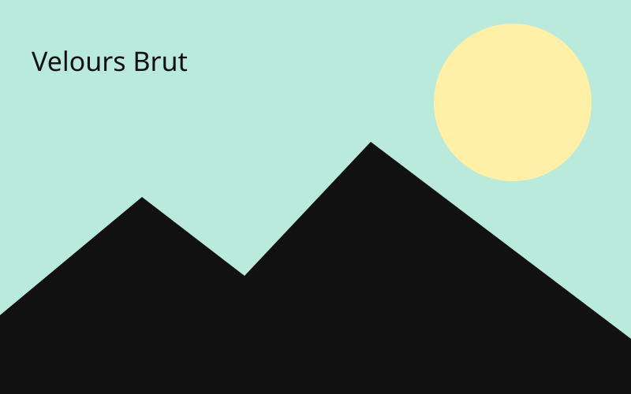
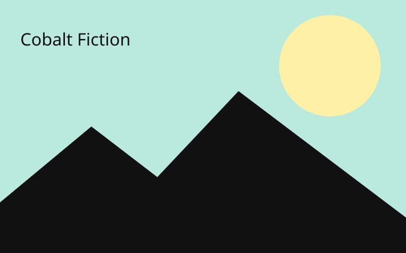
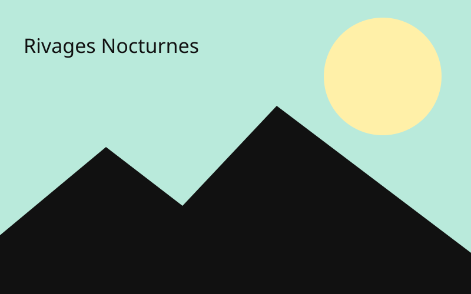

Les Éclats de Minuit
2026-11-06 · 20:00
Lille
La Péniche · Rock indépendant
2026-11-06 · 20:00
Lille
La Péniche · Rock indépendant
2026-11-14 · 19:30
Rennes
L’Ubu · post-punk
2026-11-21 · 20:30
Nantes
Indie rock · Le Ferrailleur
2026-11-28 · 19:00
Brest
La Carène · Shoegaze
2026-12-04 · 20:00
Rouen
Le 106 · Rock alternatif

2026-12-11 · 20:30
Paris
Garage rock · La Maroquinerie
2026-12-18 · 19:30
Caen
Le Cargö · Math rock
2027-01-09 · 20:00
Bordeaux
Indie pop rock · Rock School Barbey

2027-01-16 · 20:30
Toulouse
Cold wave · Le Metronum
2027-01-23 · 19:00
Montpellier
Rock psychédélique · Rockstore
2027-01-30 · 20:00
Marseille
Le Makeda · Rock indépendant
2027-02-06 · 19:30
Lyon
Dream pop · Le Marché Gare
2027-02-13 · 20:30
Grenoble
La Belle Électrique · Stoner rock
2027-02-20 · 20:00
Clermont-Ferrand
Indie rock · La Coopérative de Mai
2027-02-27 · 19:30
Saint-Étienne
Le Fil · Punk mélodique
2027-03-06 · 20:30
Dijon
La Vapeur · Post-rock

2027-03-13 · 20:00
Besançon
La Rodia · Rock alternatif

2027-03-20 · 19:00
La Rochelle
Indie folk rock · La Sirène
2027-03-27 · 20:30
Angers
Art rock · Le Chabada
2027-04-03 · 20:00
Tours
Le Temps Machine · Synth-rock
2027-04-10 · 19:30
Orléans
L’Astrolabe · post-punk
2027-04-17 · 20:30
Metz
Blues rock · La BAM
2027-04-24 · 20:00
Nancy
Indie pop · L’Autre Canal

2027-05-01 · 19:00
Carcassonne
Le Chapeau Rouge · Rock garage
2027-05-08 · 20:30
Perpignan
Elmediator · Noise rock
2027-05-15 · 20:00
Le Mans
L’Oasis · Rock progressif
2027-05-22 · 19:30
Poitiers
Indie expérimental · Le Confort Moderne
2027-05-29 · 20:30
Limoges
La Fourmi · Rock indépendant
2027-06-05 · 20:00
Nîmes
Paloma · Post-hardcore
2027-06-12 · 19:30
Avignon
Alternative rock · L’AJMI